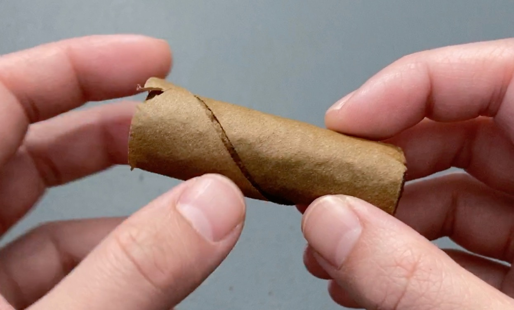
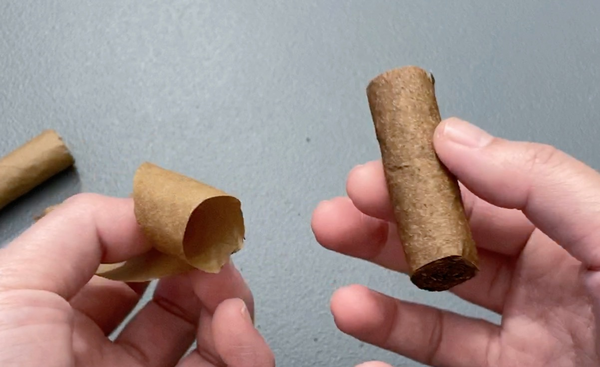
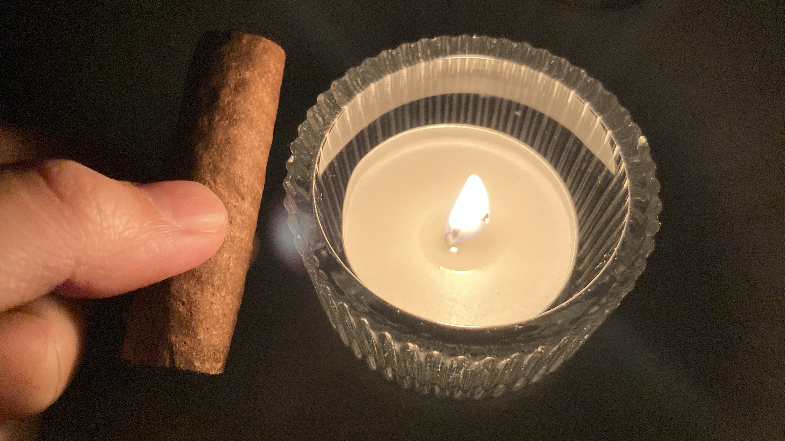
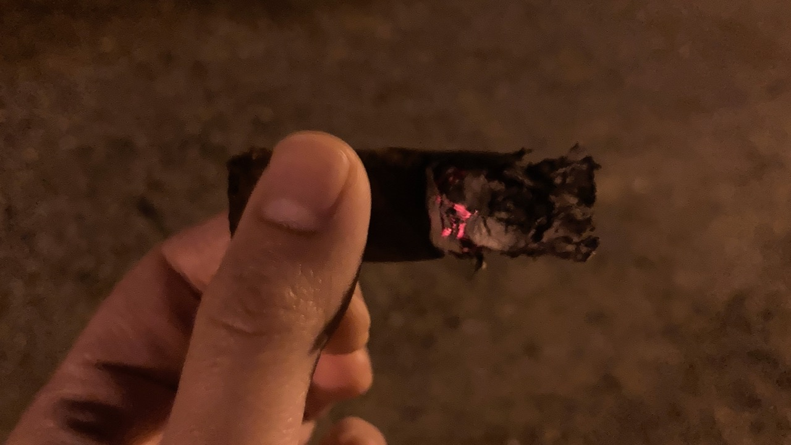

Cigar Log: Phillies - Blunt Strawberry 1 (Bottom Half, no Wrapper)
As mention from my previous post: I Bought More Phillies Cigars... and my not-so-great plan, I cut one of my Phillies Blunt Strawberry in half for experiment. In this post, I will share my thoughts and experience of the bottom half of the cigar without the wrapper leaf.
 
Flavour
I didn't taste as much sweetness to it. It has a very subtle hint of sweetness, but it's very close to none. Of
course, I still taste no strawberry. It's a light body cigar, which I don't mind but it lacks of complexity. It also
left quite a bit of sharp spice on my tongue, which I am not a fan of. I am not sure if it's directly related to the
missing wrapper, or if the cigar is just too young, either way I did not enjoy this half as much.

Smoke Time and Setting
The smoke time was about 10-15min on a rather calm night. The burn is not the prettiest. One funny thing to note was
that I didn't realized that I was smoking in a high-voltage area where my hand felt a slight tingly numb. I didn't
know the detail, but I left pretty much immediately as I saw the sign. ⚡

Conclusion
Overall, I think it's a good length to smoke. I am always kinda conscious and nervous about smoking in public. This
is a quick smoke which I like. However, I did not enjoy the sharp taste on my tongue and I did not taste much in
turns of the flavour. Maybe the other half of this cigar would be better. We'll see. 😉
And that's all I have for you. If you enjoy this post, please do consider supporting this website. Thank you and have a wonderful day! 🍓